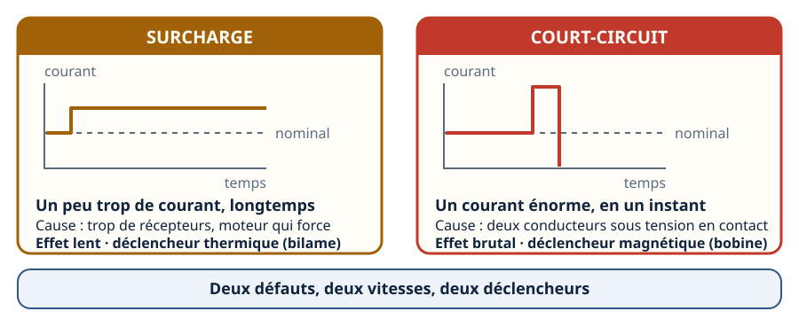
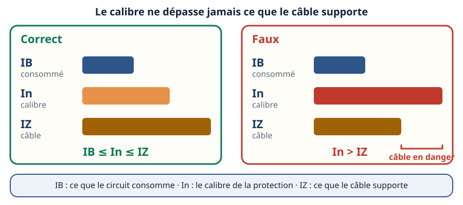
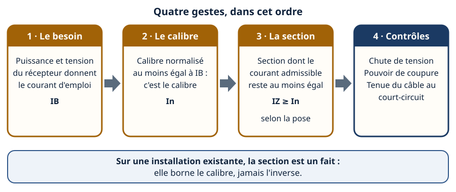
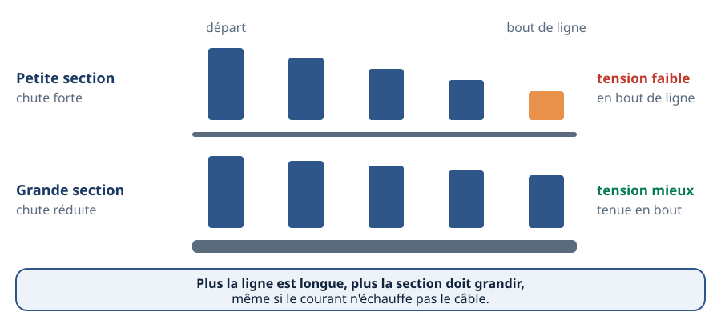
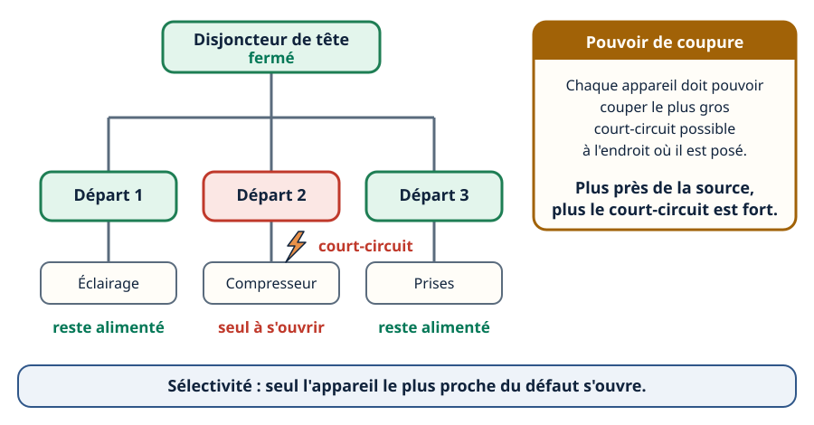
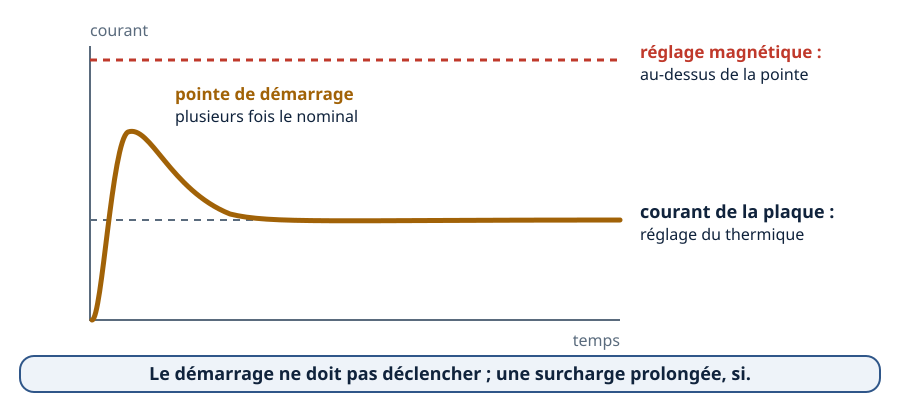
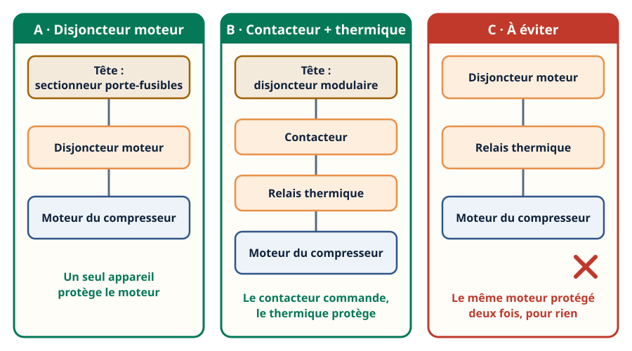

Mini-station commentée · 8 écrans et 4 questions · environ 10 minutes
Objectif
À la fin de la station, vous savez expliquer pourquoi un conducteur chauffe, distinguer surcharge et court-circuit, énoncer la règle d'or — la protection protège le câble —, mener la démarche de choix section / calibre, et protéger correctement le moteur d'un compresseur.
Référentiel
TP Technicien d'études en CVC (REAC TP-00133) : CP9 — climatisation, dimensionner l'alimentation et la protection d'un groupe — et CP6 — chauffage / ECS, alimenter circulateurs et brûleurs.
Chaque écran peut être expliqué à voix haute : le bouton « Écouter » commente ce que vous voyez. Rien n'est dit qui ne soit aussi écrit.
1 / 12
Écran 1 sur 8
Un conducteur qui travaille chauffe
Tout courant qui traverse un conducteur le chauffe : le cuivre oppose une résistance, et l'énergie perdue devient de la chaleur. Ce n'est pas un défaut en soi, tant que la chaleur s'évacue.
Ce qui décide de l'échauffement : le courant, la section du conducteur, et la façon dont le câble est posé — à l'air libre, il évacue mieux sa chaleur que sous isolant ou serré en faisceau avec d'autres.
Le danger est lent et invisible : l'isolant vieillit, durcit, se fissure, et le défaut peut apparaître des mois plus tard.

Le même courant, deux sections : la petite chauffe, la grande reste tiède.
Écran 2 sur 8
Surcharge et court-circuit : deux défauts, deux vitesses
La surcharge : un courant un peu trop élevé, mais longtemps. Cause : trop de récepteurs sur la ligne, ou un moteur qui force. Effet : échauffement lent. C'est le déclencheur thermique (un bilame, deux métaux collés qui se courbent en chauffant) qui répond.
Le court-circuit : un courant énorme, en un instant. Cause : un contact direct entre deux conducteurs sous tension. Effet : forces et chaleur brutales. C'est le déclencheur magnétique (une bobine) qui répond.
Un même disjoncteur porte souvent les deux déclencheurs : on parle de disjoncteur magnétothermique.

Le lent se traite au thermique, le brutal au magnétique.
Écran 3 sur 8
La règle d'or : la protection protège le câble
Le calibre d'un disjoncteur ou d'un fusible ne protège pas l'appareil au bout de la ligne : il protège le conducteur. Trois grandeurs entrent en jeu :
IB, le courant d'emploi : ce que le circuit demande en fonctionnement normal ;
In, le calibre de la protection ;
IZ, le courant admissible du câble : ce qu'il supporte durablement sans que son isolant souffre.
IB ≤ In ≤ IZ
La protection ne doit pas déclencher pour un fonctionnement normal, et doit couper avant que le câble souffre. Piège classique : « ça déclenche souvent, je monte le calibre d'un cran ». Si In dépasse IZ, le câble chauffe sans que rien ne l'arrête.

Le calibre ne dépasse jamais ce que le câble supporte.
Écran 4 sur 8
Choisir la section et le calibre : la démarche
Le besoin : la puissance et la tension du récepteur donnent le courant d'emploi IB.
Le calibre : un calibre normalisé au moins égal à IB — c'est In.
La section : celle dont le courant admissible IZ reste au moins égal à In. IZ dépend de la section, de la nature de l'isolant, du mode de pose, du nombre de circuits groupés et de la température ambiante.
Les contrôles : chute de tension, pouvoir de coupure, tenue du câble au court-circuit.
Les tableaux de courants admissibles et de facteurs de correction figurent dans la norme d'installation NF C 15-100, payante : cette station donne la démarche, pas les chiffres. On les relit toujours dans la norme en vigueur ou chez le constructeur du câble.

Quatre gestes, toujours dans cet ordre.
Écran 5 sur 8
La chute de tension : le piège des longues lignes
Un conducteur a une résistance : plus il est long, plus elle est grande ; plus sa section est grande, plus elle est faible. Sur une longue ligne, une part de la tension se perd en route : le récepteur reçoit moins que ce que le tableau délivre.
Conséquences : un moteur qui démarre mal — le courant de démarrage, très fort, creuse encore la chute —, un régime dégradé, des protections qui déclenchent pour rien.
Le remède : augmenter la section, même si l'échauffement ne l'exige pas. Cas typique : un groupe de condensation posé en toiture, loin du tableau.
La chute admise est bornée par la norme d'installation ; la valeur n'est pas reprise ici (voir « À sourcer » dans le fond).

La section limite la perte de tension le long du trajet.
Écran 6 sur 8
Pouvoir de coupure et sélectivité
Le pouvoir de coupure est le plus gros courant qu'un appareil sait couper sans se détruire. Il doit être au moins égal au courant de court-circuit à l'endroit où l'appareil est installé — et ce courant est d'autant plus fort qu'on est près de la source.
La sélectivité : en cas de défaut, seul l'appareil situé juste en amont du défaut s'ouvre. Le reste de l'installation reste alimenté. C'est ce qui évite de couper toute une chambre froide, ou tout un local technique, pour un défaut sur un seul départ, et qui rend le dépannage plus rapide.
Elle s'obtient par le choix et le réglage des appareils, à partir des tableaux de sélectivité des constructeurs.

Seul l'appareil le plus proche du défaut s'ouvre.
Écran 7 sur 8
Le moteur d'un compresseur : la pointe de démarrage
À la mise sous tension, un moteur appelle, pendant un court instant, plusieurs fois son courant nominal : c'est la pointe de démarrage. Une protection choisie sur le seul courant de service déclencherait à chaque démarrage.
Les courbes de déclenchement des disjoncteurs (B, C, D…) fixent à partir de quel multiple du calibre le magnétique agit : on choisit la courbe selon la charge.
Le disjoncteur moteur est fait pour cela : son thermique se règle sur le courant de la plaque signalétique, son magnétique est calé haut pour laisser passer la pointe.
Un compresseur qui peine — condenseur encrassé, manque de fluide, rotor qui cale — appelle un courant durablement trop fort : c'est le thermique qui protège. Ne jamais monter un réglage pour faire taire un déclenchement sans avoir cherché la cause.

Le réglage magnétique passe au-dessus de la pointe.
Écran 8 sur 8
La règle des protections d'un moteur, et le bilan
Un moteur a une seule protection thermique. Derrière une tête (des fusibles ou un disjoncteur modulaire), on place :
soit un disjoncteur moteur, seul ;
soit un contacteur et son relais thermique.
Jamais deux disjoncteurs moteurs l'un derrière l'autre, jamais un disjoncteur moteur suivi d'un relais thermique. Et un départ par moteur : un appareil commun à deux moteurs ne protégerait plus le câble le plus fin.
À retenir : un conducteur chauffe · surcharge = lent, court-circuit = brutal · IB ≤ In ≤ IZ · la section d'abord, les contrôles ensuite (chute de tension, pouvoir de coupure) · le démarrage d'un moteur ne doit pas déclencher.
Le réflexe : avant de toucher à un calibre, regarder la section du câble.

Une tête, puis une seule protection du moteur.
Question 1 sur 4
Le disjoncteur déclenche souvent : on monte le calibre d'un cran, sans changer le câble. Que risque-t-on ?
Rappel de l'écran 3 — le calibre ne dépasse jamais ce que le câble supporte.
Question 2 sur 4
Le courant reste sous le courant admissible, mais la ligne est très longue. Pourquoi une section plus grande ?
Rappel de l'écran 5 — la section limite la perte de tension.
Question 3 sur 4
Court-circuit sur le départ du compresseur : que fait une installation sélective ?
Rappel de l'écran 6 — seul l'appareil le plus proche du défaut s'ouvre.
Question 4 sur 4
Parmi ces montages, lequel protège correctement le moteur du compresseur ?
Rappel de l'écran 8 — une tête, puis une seule protection du moteur.
Les correspondances de la station
NF C 15-100 (même sous-ligne)
— la norme d'installation où se lisent les tableaux de courants admissibles et les limites de chute de tension.
Terre et différentiel (même sous-ligne)
— la protection des personnes : le calibre protège le câble, le différentiel protège les personnes.
Les régimes de neutre (même sous-ligne)
— la façon dont un défaut se boucle décide du courant de défaut et de l'appareil qui coupe.
ÉlectroRézo (réseau thermo-techno)
— la ligne « Protéger » : fusibles, disjoncteurs, relais thermique, section du câble.